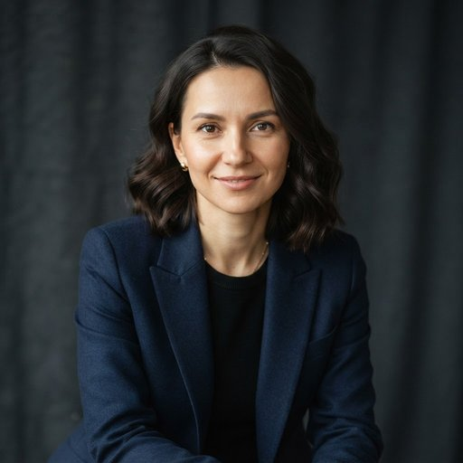

Лавирт
ООО «Лавирт», Казань
История компании
Компанию в 2012 году основал Андрей Беляев, математик, до этого занимавшийся статистическими моделями в университете. Он ушёл из академической науки, когда понял, что его методы обработки неполных рядов данных нужны рынку недвижимости, где информация о сделках разрознена. Первые два года команда из пяти человек делала ручные аналитические обзоры для региональных девелоперов в Казани. В 2015 году появились первые модели для сопоставления арендных ставок и вакантности, и тогда же в процесс вошла обязательная проверка аналитиками. С 2018 года Лавирт стал работать и с фондами недвижимости, оценивая структуру их портфелей и доходность арендных потоков. Сегодня в компании работает около 70 человек в отделах аналитики, данных и моделей.
Специализация
Лавирт силён в анализе рынка коммерческой недвижимости (офисы, склады, торговые объекты) и фондов, вкладывающихся в такие активы. Отличие в том, что результат работы моделей не отдаётся клиенту напрямую: сначала аналитик перепроверяет данные, исключает аномалии и объясняет, откуда взялась каждая цифра. Компания не занимается жилой недвижимостью и не готовит отчёты об оценке для судов и банков.
Команда
-
Андрей Беляев
Основатель и генеральный директор
Математик, много лет занимался статистическими моделями для неполных данных в университете. В 2012 году ушёл из академической науки и основал Лавирт. Сейчас отвечает за методологию и участвует в разборе сложных проектов.
-

Диляра Хасанова
Руководитель аналитического отдела
Начинала аналитиком в консалтинговой компании, где занималась обзорами рынка офисов. В Лавирте с 2016 года, прошла путь от аналитика до руководителя отдела. Отвечает за проверку результатов моделей и качество отчётов.
-
Павел Серов
Руководитель отдела данных и моделей
Пришёл в компанию из крупного банка, где строил модели оценки рисков. Затем увлёкся задачами с неполными данными и перешёл в аналитику недвижимости. Руководит сбором данных и разработкой моделей.
-
Ильдар Гарипов
Старший аналитик по складской недвижимости
Раньше работал в логистической компании и хорошо знает, как арендаторы выбирают склады. В Лавирте занимается складским сегментом и ведёт квартальные мониторинги.
-
Марина Колесникова
Инженер данных
Окончила вуз по специальности «прикладная информатика» и пришла в компанию в 2019 году. Отвечает за сбор открытых данных и приведение данных клиентов к единому виду.
-
Тимур Закиров
Аналитик по фондам недвижимости
Начинал в отделе отчётности управляющей компании и умеет читать раскрываемую информацию фондов. Сейчас готовит сравнительные обзоры портфелей и арендных потоков.
Контакты
- Адрес
- ООО «Лавирт»
ул. Советская, д. 71
420900 Казань
Россия - Телефон
- +7 843 619 7995
- info@lavirt.ru
Формы обратной связи на сайте нет, напишите на почту или позвоните.